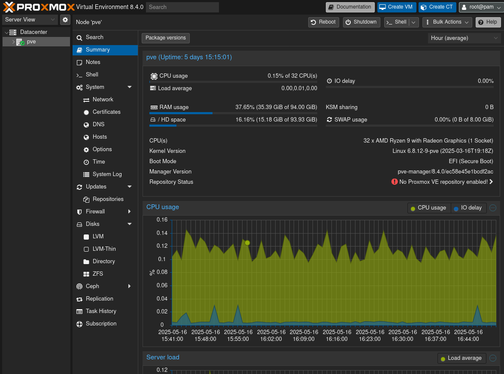

本篇文章主要是 PVE 配置 AMD 显卡直通的教程。原本以为要花几天时间折腾，结果只花了一个晚上就配置完成，没有想象中的复杂。大部分教程内容由 ChatGPT 编写，我根据实际情况和遇到的问题，作一些改动和补充说明。
🎯 教程目标
将 AMD 独立显卡通过 IOMMU 技术直通给 Proxmox VE（PVE）中的 Windows 虚拟机，从而在虚拟机中获得接近原生的图形性能。
✅ 教程前提条件
硬件要求：
- 支持虚拟化的 CPU（支持 AMD-V 或 Intel VT-d）
- 支持 IOMMU 的主板（开启 BIOS 中的 IOMMU 或 VT-d）
- AMD 独立显卡
软件环境：
- Proxmox VE 7.x 或 8.x
- Windows 10/11 虚拟机
【补充】
我的实际环境如下：
CPU：AMD Ryzen R9
GPU：AMD Radeon
OS：Windows 10
PVE 8.4.0
可以在已有的系统上配置显卡直通，也可以先配置好显卡直通后再装系统。我的情况是前者。
🧰 步骤一：启用 IOMMU
1. 编辑 GRUB 配置文件
nano /etc/default/grub
找到以下行：
GRUB_CMDLINE_LINUX_DEFAULT="quiet"
修改为：
# 如果是 AMD CPU
GRUB_CMDLINE_LINUX_DEFAULT="quiet amd_iommu=on"
# 如果是 Intel CPU
# GRUB_CMDLINE_LINUX_DEFAULT="quiet intel_iommu=on"
2. 更新 GRUB 和 Initramfs：
update-grub
update-initramfs -u -k all
【问题】
这里我遇到一个奇怪的问题：PVE 找不到 update-grub 命令，而且是在已安装 grub2-common、$PATH 已加入相关路径的情况下。
解决方法是通过 dpkg -S update-grub 找到 update-grub 安装路径，直接使用全路径执行命令。
root@pve:~# dpkg -S update-grub
grub2-common: /etc/kernel/postinst.d/zz-update-grub
grub2-common: /usr/share/man/man8/update-grub2.8.gz
grub2-common: /etc/kernel/postrm.d/zz-update-grub
grub2-common: /usr/sbin/update-grub2
grub2-common: /usr/share/man/man8/update-grub.8.gz
grub2-common: /usr/sbin/update-grub
update-grub 在如上内容的最后一行。后来重启 PVE 后，未能复现该问题。之后如果我遇到了什么奇怪的无法解决的问题，尝试重启各种服务后总能解决，虽然不知道为什么。
3. 重启系统：
reboot
🧱 步骤二：验证 IOMMU 是否生效
dmesg | grep -e DMAR -e IOMMU
如果看到 AMD IOMMU 开启的日志，说明已成功。
🔍 步骤三：查找并绑定显卡设备
1. 查看你的显卡 PCI 设备编号：
lspci -nn | grep -i vga
lspci -nn | grep -i audio
假设输出如下（你的可能不同）：
01:00.0 VGA compatible controller [0300]: Advanced Micro Devices, Inc. [AMD/ATI] RX 580 [1002:67df]
01:00.1 Audio device [0403]: Advanced Micro Devices, Inc. [AMD/ATI] HDMI Audio [1002:aaf0]
【补充】
如果输出了多个音频设备（Audio device），是正常情况，我的有三个。
注意例子给出的两个 PCI 设备是同一个 IOMMU 组，识别方法（大概）是它们的首两位数字相同，只有最后一位不同。
这里也会输出不同 IOMMU 组的设备，只是同组的设备下面会有特别处理，不同组的可忽略。
2. 编辑 vfio 配置文件
创建文件：
nano /etc/modprobe.d/vfio.conf
添加以下内容（使用你的设备 ID）：
options vfio-pci ids=1002:67df,1002:aaf0
【补充】
这里 ids 后即为同一个 IOMMU 组的两个设备 ID：1002:67df,1002:aaf0
3. 屏蔽 amdgpu 等驱动加载：
echo "blacklist radeon" >> /etc/modprobe.d/blacklist.conf
echo "blacklist amdgpu" >> /etc/modprobe.d/blacklist.conf
【补充】
我这里 PVE 似乎有自己的 blacklist 在 /etc/modprobe.d/pve-blacklist.conf，追加这里也没问题。
4. 更新 initramfs：
update-initramfs -u -k all
5. 重启系统：
reboot
🧪 步骤四：验证设备是否绑定 vfio
lspci -nnk -d 1002:67df
输出中应包含：
Kernel driver in use: vfio-pci
如果是 amdgpu 而不是 vfio-pci，说明没有成功屏蔽驱动。
【问题】
我这里没有屏蔽成功。先检查确认：在 blacklist 的显卡设备、音频设备及其 ID 没有错误。 如果无误，执行以下两项：
✅ 1. 强制优先加载 vfio 模块，屏蔽 amdgpu 提前加载
编辑 initramfs 配置文件：
nano /etc/initramfs-tools/modules
添加以下内容：
vfio
vfio_pci
vfio_iommu_type1
vfio_virqfd
✅ 2. 更新 initramfs 和重启
update-initramfs -u -k all
update-grub
reboot
我执行完成后成功解决问题，如果你仍然无法绑定 vfio，请询问 ChatGPT 获取更多解决方案。为避免文章冗长，此处省略其它方案。
💻 步骤五：配置 Windows 虚拟机
-
创建一个新的 Windows VM（建议 Win10/11）
-
添加 PCI 设备直通（在 VM 的“硬件”界面中点击“添加” → “PCI 设备”）
-
选择你的显卡设备（VGA 和音频都加上）
-
启用：
- “All functions”
- “Primary GPU”
- “PCIe”
- “ROM-Bar” （有时可选，有问题再取消）
- “拷贝 BIOS ROM” （可选，可自制或提取显卡 VBIOS）
-
修改 VM 配置文件（VM ID 改为你的，示例是 100），加入以下内容：
nano /etc/pve/qemu-server/100.conf
添加或修改以下项：
cpu: host,hidden=1,flags=+pcid;+aes
machine: q35
bios: ovmf
args: -cpu host,kvm=off
【补充】
bios 也可选默认（SeaBIOS），无影响。
注意，虽然 ChatGPT 教程说也要加上音频设备，但是如果我加上反而会导致报错而无法启动。在任务日志中可看到 TASK ERROR: device '0000:0*:00.1' assigned more than once 的信息，表示虚拟机重复添加了同一块 PCI 设备。因此我只添加了显卡设备，结果成功启动。
🪟 步骤六：启动 Windows 安装并安装 AMD 驱动
- 安装 Windows 10/11（使用 VNC）
- 安装完成后，安装 AMD 显卡官方驱动：https://www.amd.com/en/support
- 如果显卡连接了显示器，现在你可以直接在外接显示器上看到 Windows 画面。
【问题】
先说第一点，我在启动 VNC 的时候报错，任务日志如下：
VM 10* qmp command 'set_password' failed - Could not set password
TASK ERROR: Failed to run vncproxy.
这是由于把物理显卡直通给虚拟机当作主显卡了，而导致 PVE 的 VNC（虚拟显卡）接口无法使用。
解决方法是给虚拟机添加或修改「显示」为「标准 VGA（std）」，相当于添加了虚拟显卡给 VNC 使用。
然后第二点，我安装完 AMD 显卡驱动后，AMD 的 Adrenalin Edition 软件提示类似「无法找到显卡」的信息，重启虚拟机一直黑屏，PVE 任务日志显示 TASK ERROR: connection timed out。
在尝试最后「常见问题处理」的解决方法前，试着重启了 PVE，结果成功启动 Windows，也成功识别出了显卡型号。
最后第三点，我没能看到 Windows 画面，不过我并不需要显卡外接显示器，一直用笔记本 RDP 连接远程桌面，所以无所谓了。
只是我在解决第二项问题的过程中遇到第三点问题，所以姑且提一下，至于原因及解决方法没细究。
📌 常见问题处理
| 问题 | 解决方法 |
|---|---|
| 显卡直通后启动黑屏 | 尝试提取并加载 VBIOS，或关闭“Primary GPU” 选项 |
| 重启虚拟机后黑屏或无法启动 | RX 系列部分显卡不支持 reset，尝试使用 vendor-reset 模块 |
| 驱动安装后蓝屏 | 确保使用了最新驱动，或尝试“最小安装”模式 |
| PVE 没有显卡输出 | 需要第二张显卡供 PVE 使用，或启用 SSH 远程管理 |
我的其它补充
SMB VS NFS
Windows 上对 NFS 的支持有限，因此 NFS 不如 SMB 对 Windows 友好。好像 Windows10 不支持 NFSv4，搭建 NFS 服务的时候请注意。
原神
在运行原神的时候，无法转动视角。原因如下：
RDP只发送鼠标的绝对位置，这导致在远程桌面中，像原神这样依赖于鼠标的相对位移的 3D 游戏无法操作（无法转动视角）。
解决方法可使用这个项目开发的工具 RDP Relative Mouse。
偶尔有失效的情况。其它有相同问题的 3D 游戏应该也可以使用。
另外，这个工具只能在主显示中使用，因此如果你有多个显示器，需要将原神所在的显示器设为主显示器。
